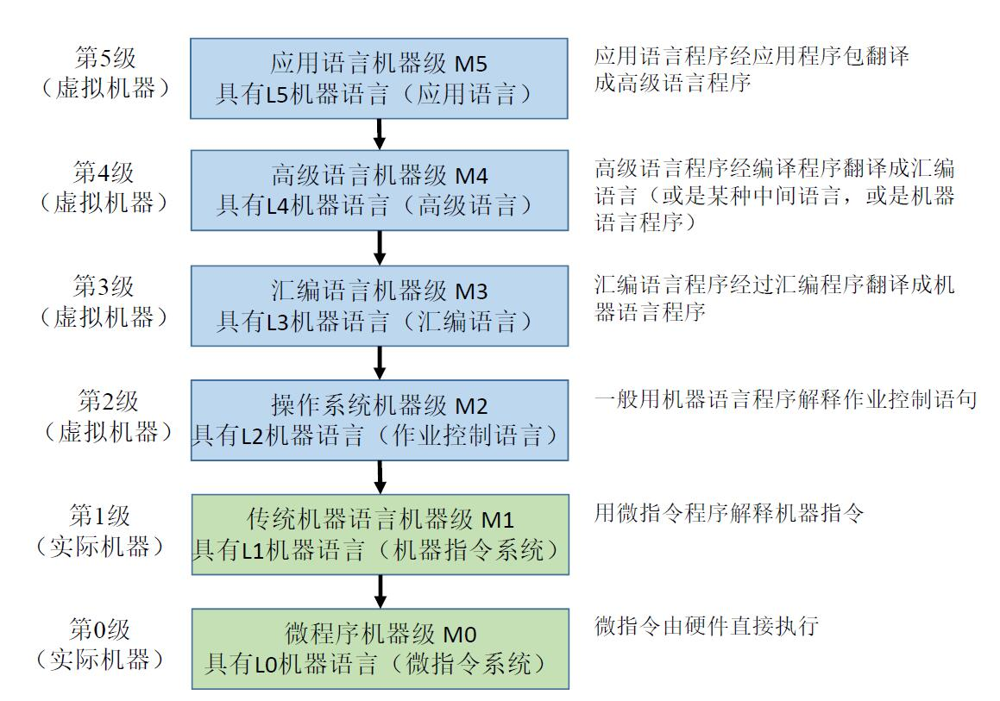
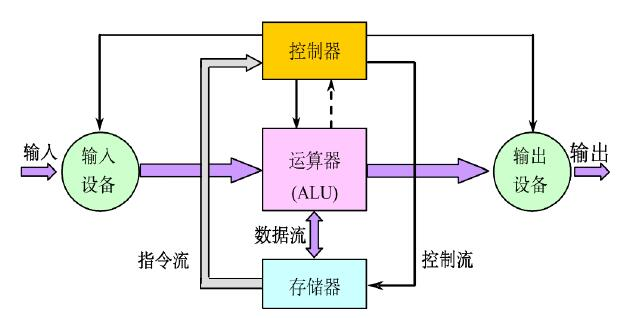

体系结构复习笔记 第一弹
# 计算机系统结构
计算机系统结构研究的是软、硬件之间的功能分配以及对传统机器级界面的确定，为机器语言、汇编语言程序设计者或编译程序生成系统提供使其设计或生成的程序能在机器上正确运行而应看到和遵循的计算机属性。
# 计算机系统层次结构
计算机系统层次结构如下图所示：

其中，M0, M1 为硬件部分，M2 及以上属于软件部分。
# 透明性
定义：本来存在的事物或属性，从某种角度看似乎不存在
例如：浮点数表示、乘法指令对高级语言程序员、应用程序员透明；对汇编语言程序员、机器语言程序员不透明。
# 计算机系统分类
有多种分类方式，包括：
- 佛林 (Flynn) 分类法：按照指令流和数据流的多倍性特征进行分类，可分为如下四类：
- 单指令流单数据流 SISD (Single Instruction Single Data stream)
- 单指令流多数据流 SIMD (Single Instruction Multiple Data stream)
- 多指令流单数据流 MISD (Multiple Instruction Single Data stream)
- 多指令流多数据流 MIMS (Multiple Instruction Multiple Data stream)
- 库克 (Kuck) 分类法：按控制流和执行流分类
- 单指令流单执行流 SISE (Single Instruction Single Execution stream) 典型的单处理机
- 单指令流多执行流 SIME (Single Instruction Multiple Execution stream) 多功能部件处理机、相联处理机、向量处理机、流水线处理机、超流水线处理机、超标量处理机、SIMD 并行处理机
- 多指令流单执行流 MISE (Multiple Instruction Single Execution stream) 多道程序系统
- 多指令流多执行流 MIME (Multiple Instruction Multiple Execution stream) 典型的多处理机
- 冯泽云分类法：用最大并行度对计算机系统进行分类
# 平均并行度
假设每个时钟周期 内能同时处理的二进制位数为 , 则 个时钟周期内平均并行度为
# 计算机系统定量原理
# Amdahl 定律
阿姆达尔定律 (Amdahl law) 是通过改进部分的时间占比和加速比，计算整个系统加速比的方法。关键符号约定如下：
- 可改进部分比例 为可改进部分运行时间与改进前总运行时间的比值。
- 改进部分的加速比 为改进部分改进前后执行时间的比值。
- 改进前整个任务的执行时间为
- 改进后整个任务的执行时间为
- 改进后整个任务的加速比为
那么阿姆达尔定律可描述为：
# CPU 性能公式
基于程序执行的总条数 (Instruction Counter), 平均每条指令的时钟周期数 (Cycles per Instruction), 时钟主频 计算 CPU 程序执行时间 的公式如下：
如果有 种指令，每种指令的执行次数为 , 那就扩展为
平均指令周期数
其中 是显然的。
# 程序访问的局部性原理 (Principle of Locality)
局部性分时间局部性和空间局部性：
- 时间局部性：程序中近期被访问的信息项很可能马上将被再次访问。
- 空间局部性：指那些在访问地址上相邻近的信息项很可能会被一起
访问。
# 计算机性能衡量
# MIPS
MIPS (Million Instructions Per Second) 指每秒指令执行 (百万) 条数。是计算机性能衡量的一个重要指标。计算公式如下：
其中， 为处理机的工作主频， 定义同上。
以 MIPS 衡量的优缺点如下：
- 优点：
- 直观、方便
- 缺点：
- MIPS 依赖于指令集，用 MIPS 来比较指令集不同的机器的性能好坏是很不准确的
- 在同一台机器上，由于指令使用频度差别很大，MIPS 会因程序不同而变化
- MIPS 可能与性能相反。例如，具有可选硬件浮点运算部件的机器，具有优化功能的编译器等。
# 计算机系统结构的发展
# 冯・诺依曼结构

特点：指令驱动
- 以运算器为中心，集中控制。
- 在存储器中，指令和数据同等对待。指令和数据一样可以进行运算，即由指令组成的程序是可以修改的。
- 存储器是按地址访问、按顺序线性编址的一维结构，每个单元的位数是固定的。
- 指令的执行是顺序的。
- 一般是按照指令在存储器中存放的顺序执行。
- 程序的分支由转移指令实现。
- 由指令计数器 PC 指明当前正在执行的指令在存储器中的地址。
- 指令由操作码和地址码组成。
- 指令和数据均以二进制编码表示，采用二进制运算。
# 改进的冯・诺依曼结构
改进之后的冯・诺依曼计算机的特点是
- 存储器为中心
- 总线结构
- 分散控制